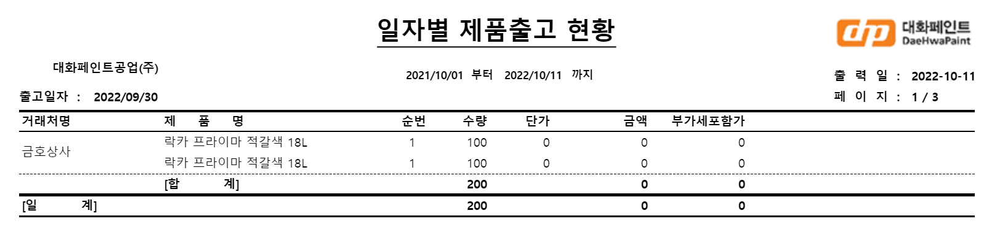
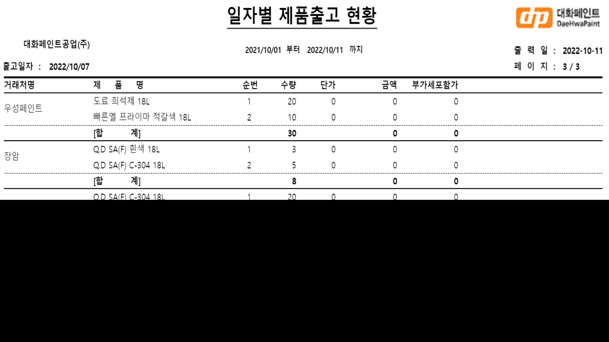
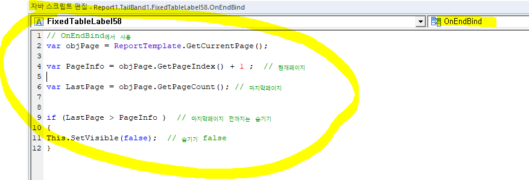

맨 마지막 페이지에 한번만 나와야할 때 (테일 밴드)


테일 밴드 사용
-
주의사항 : 테일 밴드 자체에 적용이 안되기 때문에, 셀 모두에 적용 시켜야한다 (빈 항목도 포함)
-
OnEndBind에 써야함

// OnEndBind에서 사용
var objPage = ReportTemplate.GetCurrentPage();
var PageInfo = objPage.GetPageIndex() + 1 ; // 현재페이지
var LastPage = objPage.GetPageCount(); // 마지막페이지
if (LastPage > PageInfo ) // 마지막페이지 전까지는 숨기기
{
This.SetVisible(false); // 숨기기 false
}